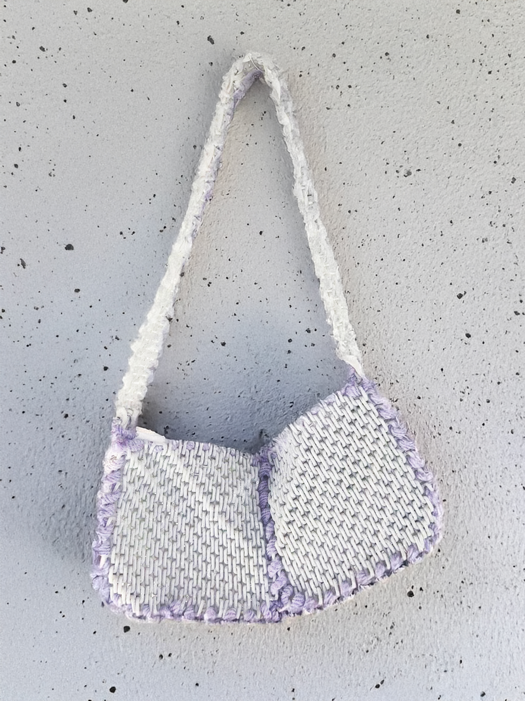
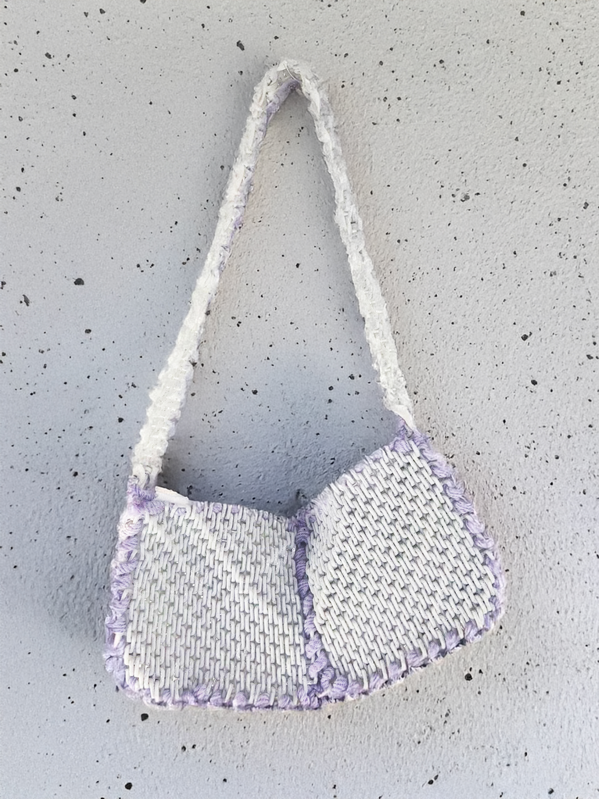

Syn_3D is a soft baguette bag made out of 3D printed PLA mesh and assembled with a cotton string.
Syn_3D invites people to question traditional modes of production of meshes for in the textil industry by using FDM 3D printing to create more responsible, artistic designs. Each bag is a wearable art piece, merging technology and personal expression. Syn_3D tries to minimise waste and rethink how products are made.